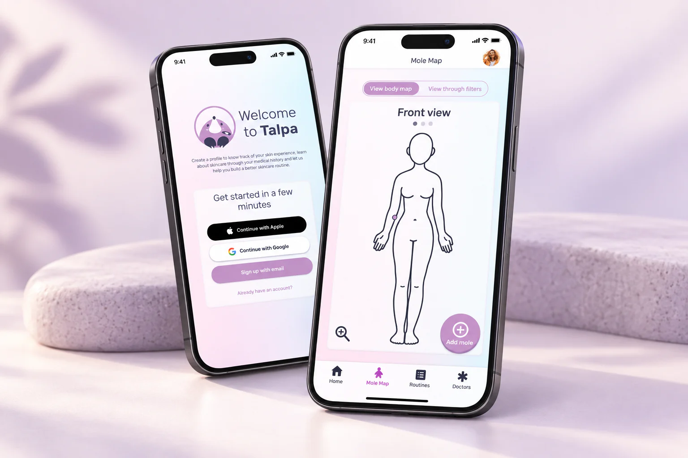

Listen before designing
A survey with more than 50 responses and follow-up interviews informed the concept. Sun protection and skin health were recurring concerns.
Talpa
A prevention-focused app concept created with Isotta: mole tracking, personal care routines and a more approachable way to look after your skin.

People can understand the importance of skin care and still struggle to make time for it. We explored how to make tracking changes and building protective habits easier to fit into daily life.
A survey with more than 50 responses and follow-up interviews informed the concept. Sun protection and skin health were recurring concerns.
The proposed experience brought together mole tracking, treatment records and personalised prevention information.
Concept and usability testing highlighted small text, small controls and a crowded home screen. These observations informed the move towards the high-fidelity design.
Working from research through prototypes helped us connect the visual identity to the intended experience: friendly, considered and trustworthy.